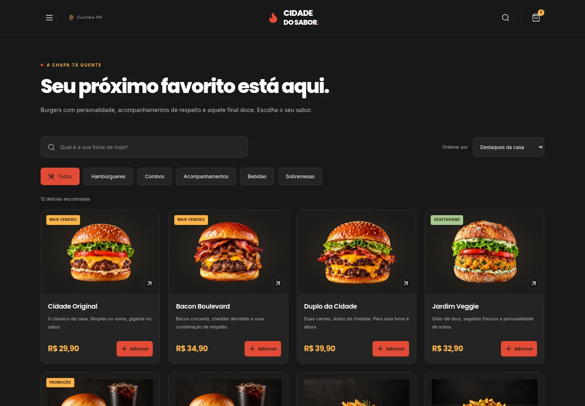
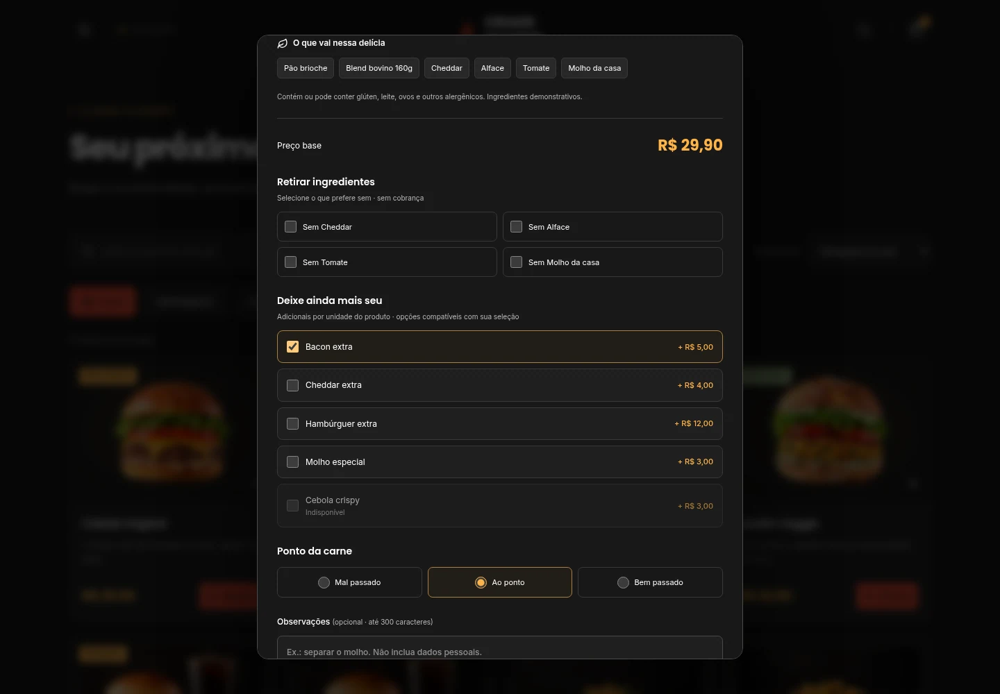
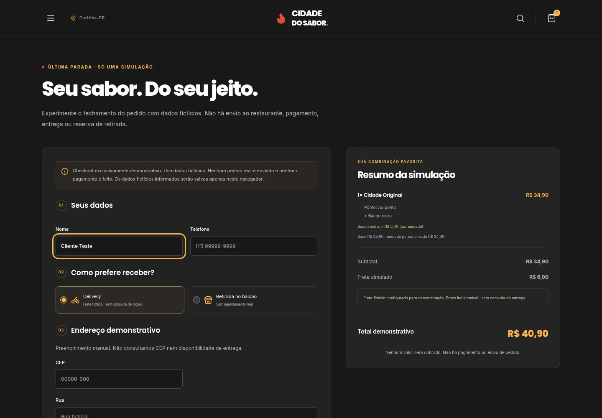
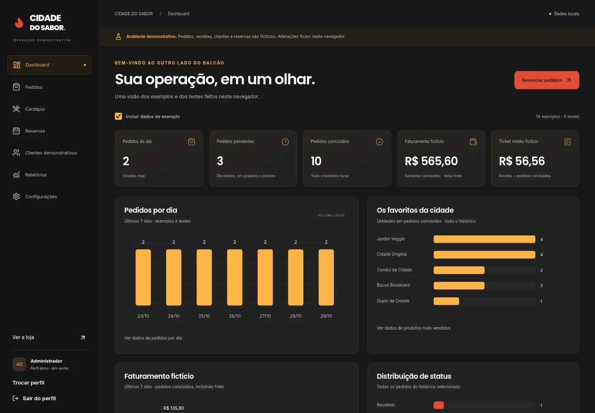
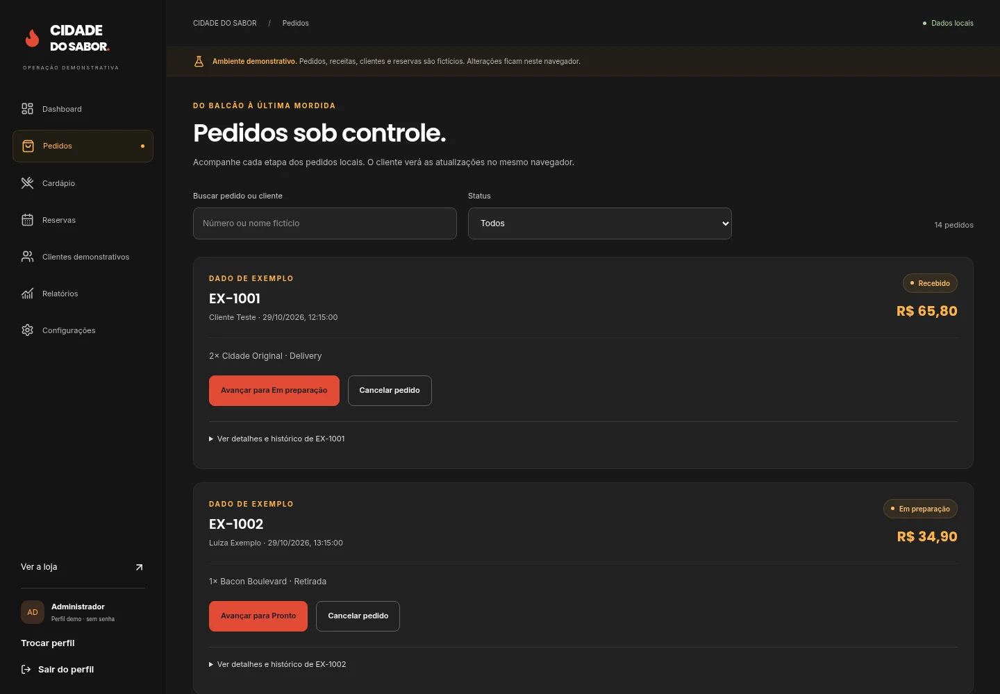
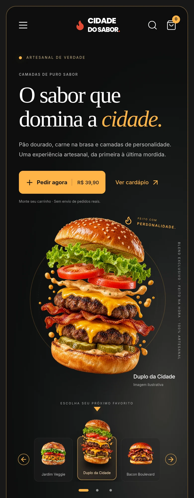
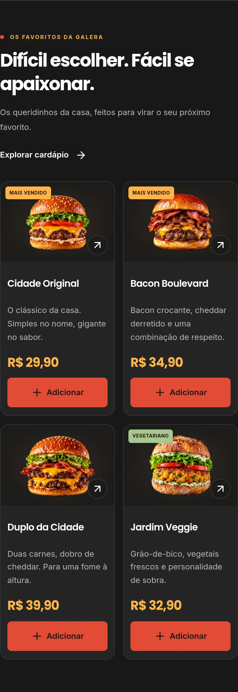

Escolher e personalizar
Cardápio com busca, categorias, ordenação, ingredientes, adicionais e montagem de combos.
PROJETO CONCEITUAL · PORTFÓLIO · V3
Uma hamburgueria fictícia que conecta identidade gastronômica, cardápio interativo e operação demonstrativa em uma mesma experiência digital.
Projeto conceitual, sem cliente real. O vídeo foi gravado da aplicação original em execução; as capturas mostram interfaces existentes. Esta apresentação não executa a loja ou o painel da demo. Ainda não há link público para testar a aplicação interativa.
Reprodução automática sem som quando o vídeo estiver visível, com pausa pelos controles. A preferência por movimento reduzido mantém a reprodução manual. Baixar o vídeo.
01 / CONTEXTO E PROPOSTA
O projeto explora o caminho da descoberta do cardápio à personalização e ao acompanhamento de uma simulação de pedido. A interface inclui uma área de gestão com perfis e dados de exemplo.
02 / IDENTIDADE VISUAL
A identidade combina fundo escuro, vermelho e laranja, com Poppins e Inter e um acento serifado em Georgia na vitrine. O símbolo de chama e as imagens gastronômicas fazem parte do projeto original.
03 / RECURSOS NO PROJETO ORIGINAL
Recursos identificados no código e na documentação do projeto. As capturas abaixo apresentam esses fluxos; a execução interativa pertence à aplicação original.
Cardápio com busca, categorias, ordenação, ingredientes, adicionais e montagem de combos.
Carrinho persistido, checkout local, histórico de pedidos e reservas demonstrativas.
Perfis demo e painel com produtos, pedidos, reservas e relatórios calculados a partir de dados locais.
04 / INTERFACES EXISTENTES
Capturas copiadas dos arquivos originais, sem montagens ou interfaces inventadas. Dados, valores e estados exibidos são exemplos. Abra cada imagem em uma nova aba para ampliar.








05 / TECNOLOGIAS
O código original está em um repositório independente. Esta apresentação no portfólio da dSaOl usa HTML e CSS e mantém as tecnologias do site principal.
06 / ALCANCE DA DEMONSTRAÇÃO
O painel demonstrativo deste projeto é independente do painel protegido da dSaOl Web Studio. Nenhuma função deste estudo altera usuários, clientes ou projetos do backend da dSaOl.
Consultar o projeto original no GitHubVamos conversar sobre o formato que faz sentido para a sua ideia.